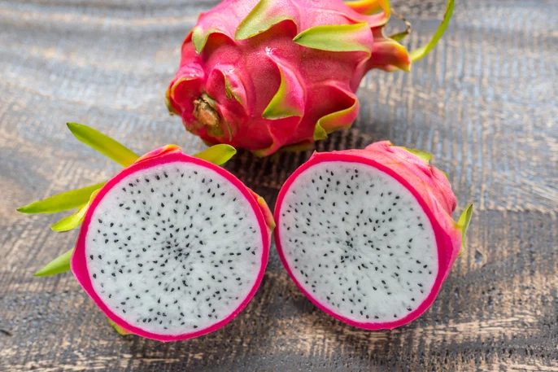
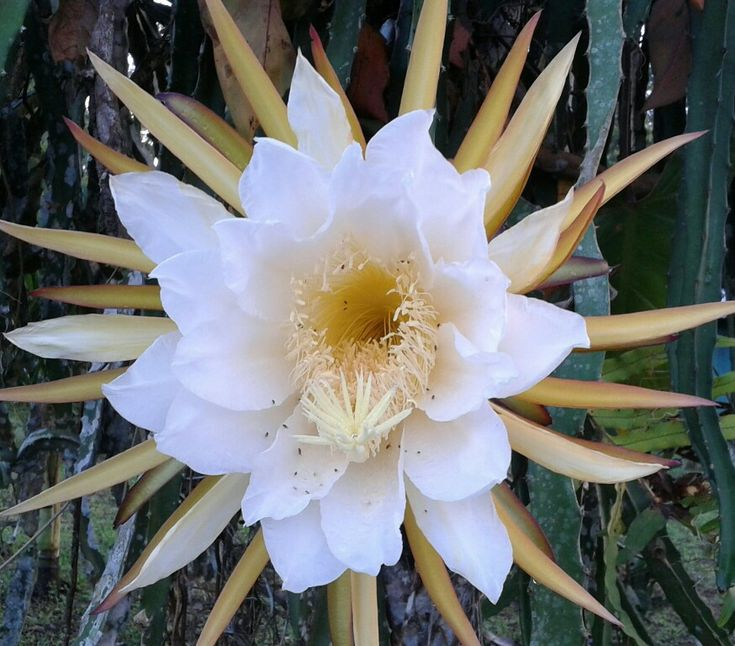

A pitaya, também conhecida como fruta do dragão, é originária da América Central e México. Ela pertence à família dos cactos e se adapta bem a climas tropicais e subtropicais. Atualmente, seu cultivo se expandiu para diversos países, incluindo o Brasil, onde tem ganhado destaque na agricultura.

A pitaya é plantada principalmente por estacas (partes do caule). O ideal é cultivá-la em solos bem drenados e com boa incidência de luz solar. A melhor época para o plantio é durante períodos mais quentes e úmidos. A produção dos frutos geralmente ocorre entre o verão e o início do outono.
A floração da pitaya ocorre à noite, sendo uma característica marcante da planta. Suas flores são grandes, brancas e muito perfumadas. Elas abrem apenas por uma noite e são polinizadas por insetos e morcegos.

| Nutriente | Quantidade (100g) |
|---|---|
| Calorias | 50 kcal |
| Vitamina C | 8 mg |
| Fibras | 3 g |
| Água | 85% |
O consumo da pitaya traz diversos benefícios para a saúde. Ela é rica em antioxidantes, auxilia na digestão devido às fibras e contribui para o fortalecimento do sistema imunológico. Além disso, ajuda na hidratação do corpo por possuir grande quantidade de água.
Ingredientes: 1 pitaya, 200 ml de água, açúcar a gosto.
Modo de preparo: Bata todos os ingredientes no liquidificador e sirva gelado.
Ingredientes: pitaya, banana, maçã e laranja.
Modo de preparo: Corte as frutas, misture tudo e sirva.
Ingredientes: pitaya congelada, leite condensado e creme de leite.
Modo de preparo: Bata tudo e leve ao congelador até firmar.